Histórico: v1.0 → v1.1
| antes (v1.0) | depois (v1.1) |
|---|---|
 | 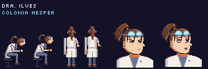 |
 | |
 | nova: a reação (medo contido), camada 04 no lugar da 01 |
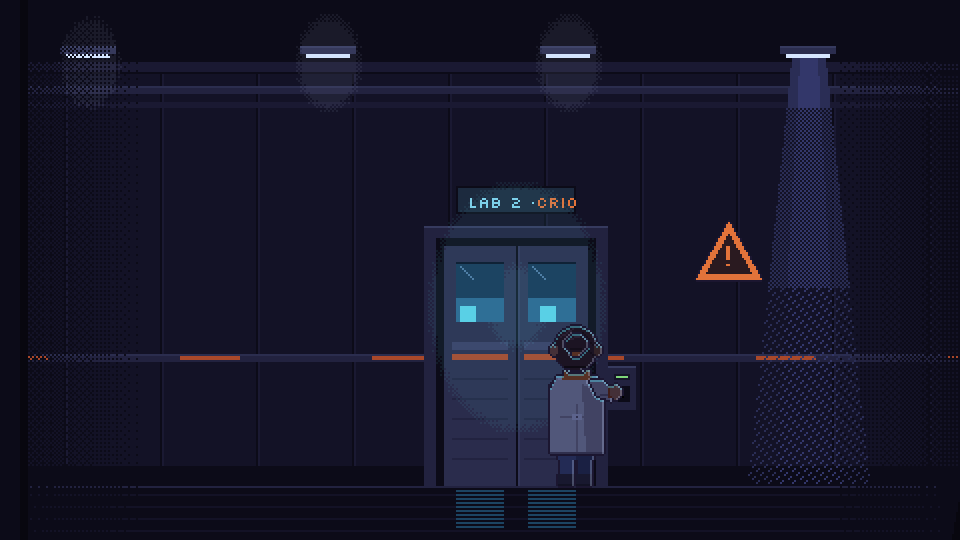 | |
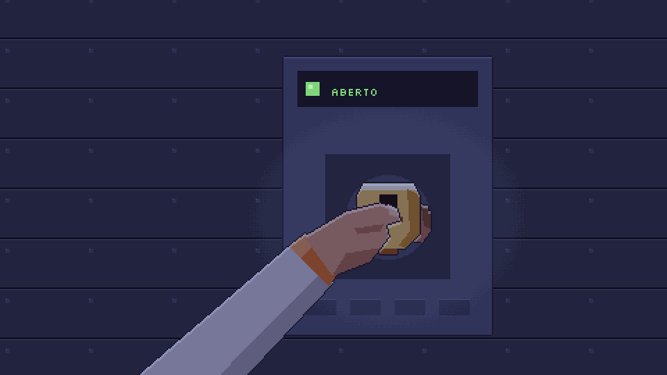 |
tools/sprites/trailer_ilves_char.py). Paleta curta: pele 3, cabelo 3, jaleco 3, uniforme 2, contorno.
Escala de jogo: sentada 44×48, em pé 30×60, e um retrato 3/4 de 64×64 no estilo diálogo de RPG (olhos
com brilho, boca de 1-2 px). Visual novo (inspiração de personalidade, sem copiar): cientista intensa e meio
desleixada, alta e esguia, curvada e curiosa, rabo de cavalo alto e bagunçado com mechas caindo no rosto e
goggles empurrados na testa. Animação em poucos quadros bem desenhados: 8 q. no microscópio (respira, gira
o foco, rabo de cavalo atrasa, pisca), susto de 6 q. (levanta a cabeça), retrato com concentração (8 q.)
e medo contido (6 q.), e a chave em 4 q. A cena 3b virou plano médio: ela de costas, corpo
inteiro, e o destaque é o painel ABERTO → TRAVADO. Os closes (1b e 3b) agora são em meia resolução (canvas
256×144, o vídeo amplia ×8) pra ela ficar grande sem misturar tamanho de pixel. Nenhum asset de terceiros
(ver CREDITS.md). antes (v1.1) × depois (v1.2)tools/sprites/trailer_ilves_char.py): silhueta de curvas (Catmull-Rom) em vez de blocos, ombros
caídos, costas arqueando no microscópio, caimento do jaleco; proporção humana (cabeça ~1/7 da altura, pescoço que não
é caixa); sombreamento que segue a forma; antialias manual nos cantos do contorno. Animação: 12
quadros (antes 4-6) com easing, respiração no ombro, movimento secundário (coque, mecha solta e
barra do jaleco atrasam o corpo) e piscada natural (meio → fechado → meio). Close com feição (pálpebra, íris,
sobrancelha, nariz, lábios): loop de concentração + uma tira nova de medo contido (10 q., sem loop).
Insert da chave refeito: punho fechado, polegar apertando o anel, indicador por trás, giro de 45° em 12 q. com
antecipação e assentamento, manga atrasando. Rosto do wide da cena 1 agora pega a luz da lâmina.
antes × depoiscenas.json pro vídeo. Tudo em pixel art 1:1 no
estilo do jogo (contorno #1b1630, luz em faixas com dither só na borda, alpha 0/255), quadros 16:9 de
480×270 pra ampliar ×4 sem suavizar. Sem referência externa: tudo original, derivado do próprio jogo (paleta da
bíblia, o container_sealed e o machine_melter do jogo reaproveitados, a criatura das pendentes
do gelo gigante).cocoon das pendentes (a recomendada). O dono
ainda não escolheu; pra trocar: HESPER_CRIATURA=larva python3 tools/sprites/trailer_ilves.py
(ou embryo, fetal). O close 6b é desenho próprio da criatura em C, feito pra combinar com
qualquer uma das formas.cena1 · cena1b · cena2 · cena3 · cena3b · cena4 · cena5 · cena6 · cena6b · a Dra. Ilves · pro editor do vídeo
| antes (v1.1) | depois (v1.2) |
|---|---|
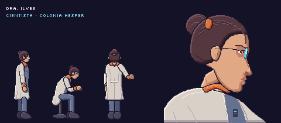 | 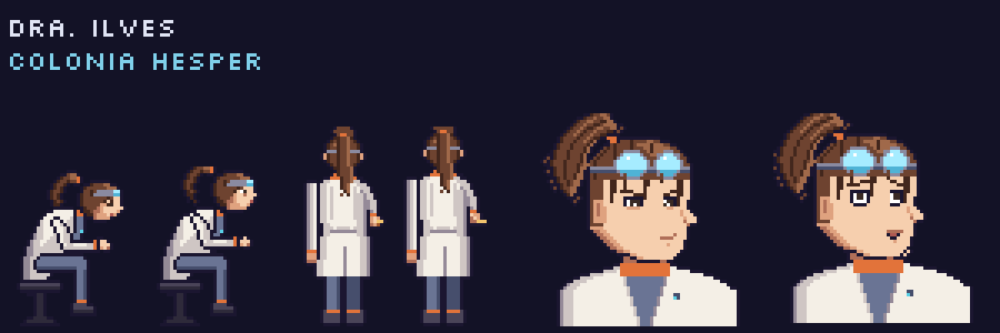 retrato: concentrada · piscando · medo contido |
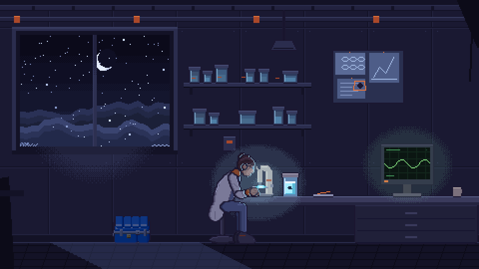 | 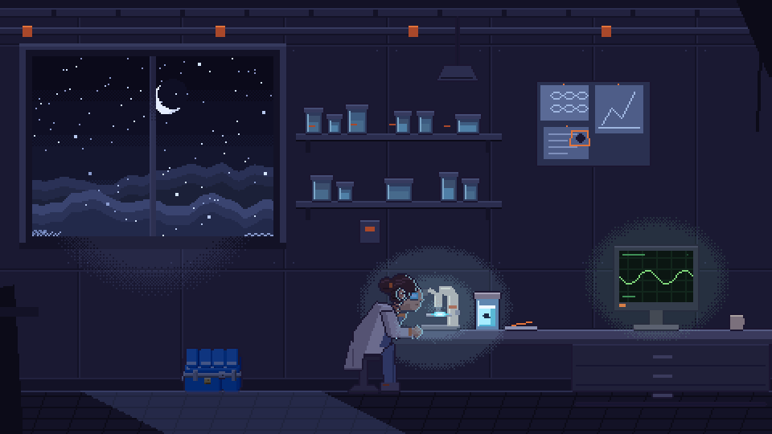 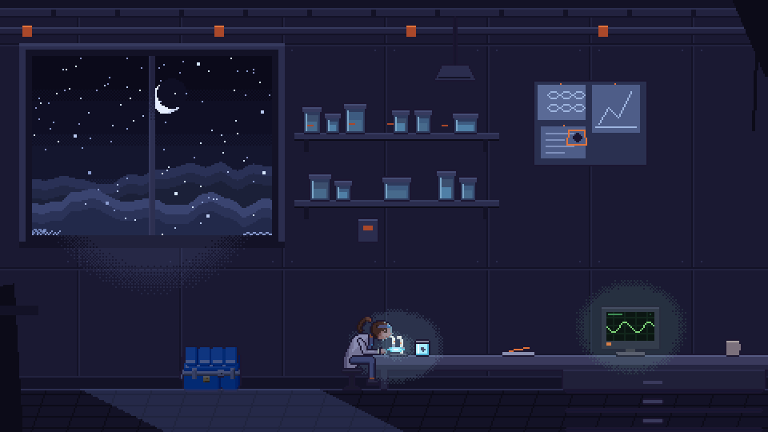 nova: o susto (camada 08, no lugar da 05) |
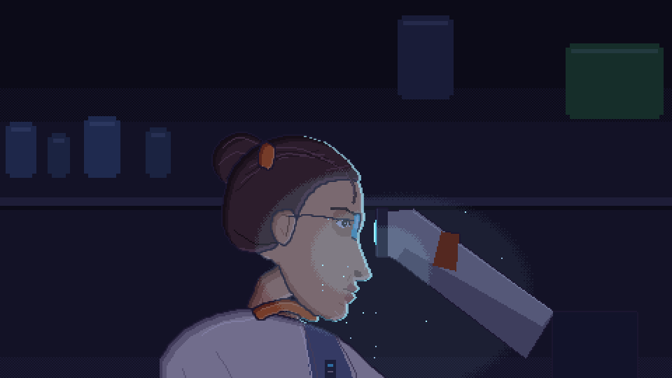 |
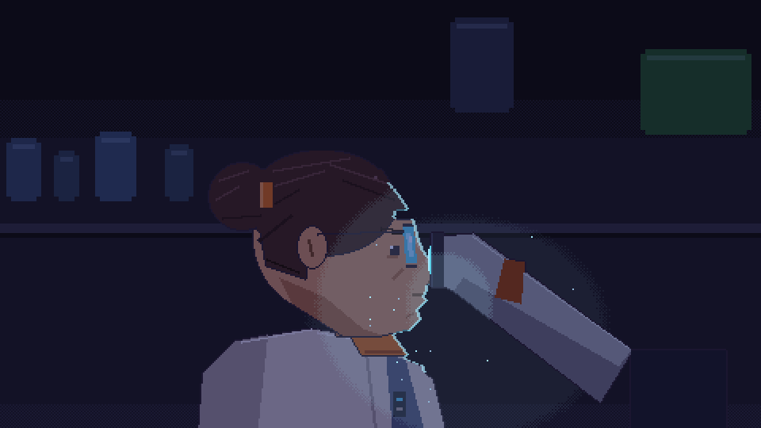 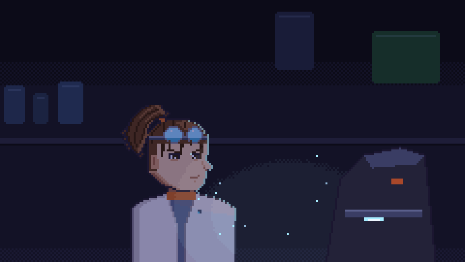 |
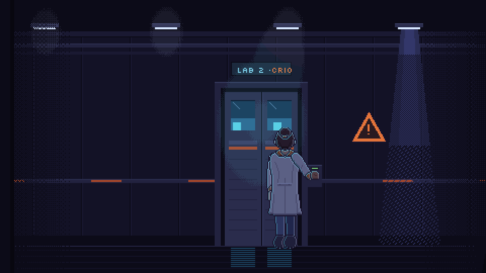 | 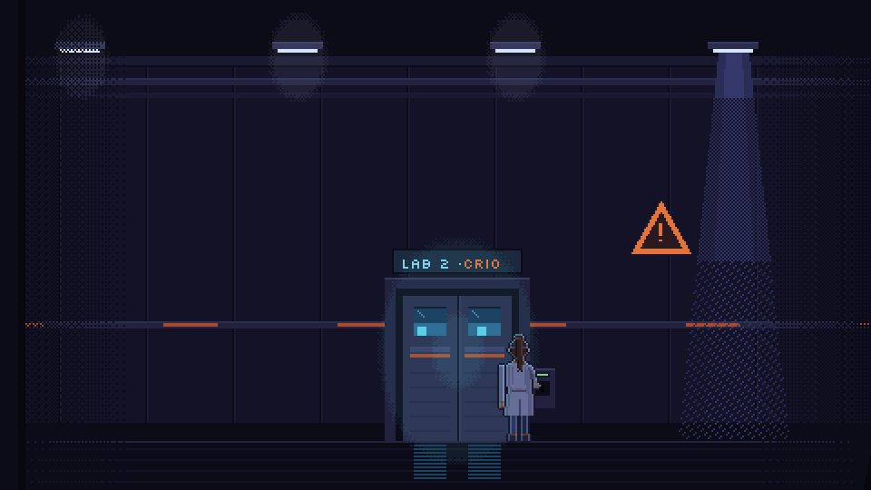 |
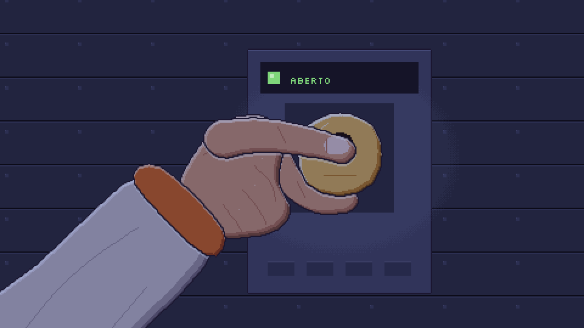 | 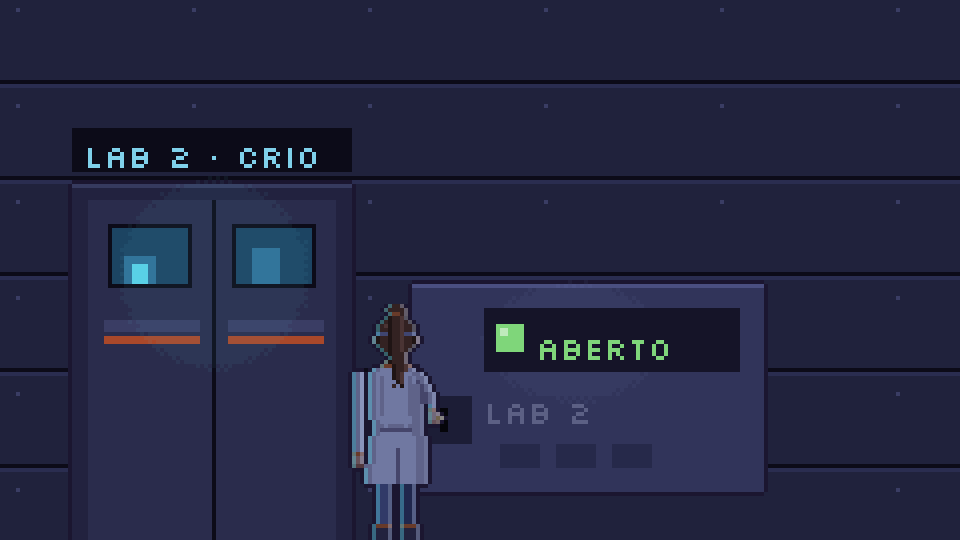 |
| antes (v1.0) | depois (v1.1) |
|---|---|
|  |
| |
| nova: a reação (medo contido), camada 04 no lugar da 01 |
 | |
 |
Movimento sugerido: Pan lento da esquerda pra direita (camadas com parallax) e zoom até ×2 (inteiro) parando em Ilves. Neve na janela em loop. A luz do microscópio pulsa de leve. No fim, corte seco pro close (cena 1b).
| # | arquivo | x, y | tamanho | quadros | parallax | prévia |
|---|---|---|---|---|---|---|
| 0 | cena1_laboratorio/00_ceu.pngcéu, lua minguante e a serra (só aparece pela janela) | 0, 0 | 512×288 | 1 | 0.2 | 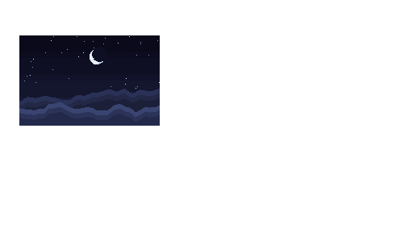 |
| 1 | cena1_laboratorio/01_neve_janela.pngneve caindo na janela, loop de 8 quadros | 36, 44 | 150×112 | 8 @ 8 fps | 0.35 | |
| 2 | cena1_laboratorio/02_sala.pngparede, janela vazada, prateleiras, bancada, microscópio, monitor | 0, 0 | 512×288 | 1 | 1.0 | 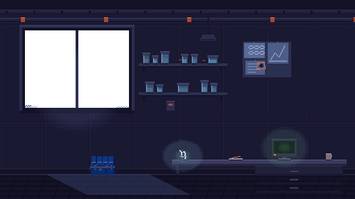 |
| 3 | cena1_laboratorio/03_monitor_tela.pngosciloscópio verde: onda + pico (3..5) | 395, 204 | 30×18 | 8 @ 6 fps | 1.0 | |
| 4 | cena1_laboratorio/04_pote_gelo.pngpote de amostra: gelo com a mancha escura que se mexe um pixel (vê quem olha fixo) | 275, 221 | 10×11 | 6 @ 3 fps | 1.0 | |
| 5 | cena1_laboratorio/05_ilves.pngIlves curvada na ocular: loop de 8 q. (respira, gira o foco, rabo de cavalo atrasa, pisca no q. 6) | 226, 205 | 44×48 | 8 @ 6 fps | 1.0 | |
| 6 | cena1_laboratorio/06_lamina_brilho.pnga lâmina acesa pulsa | 253, 223 | 20×8 | 4 @ 4 fps | 1.0 | |
| 7 | cena1_laboratorio/07_primeiro_plano.pngsilhuetas escuras na frente: mexem mais rápido no pan | 0, 0 | 512×288 | 1 | 1.4 | 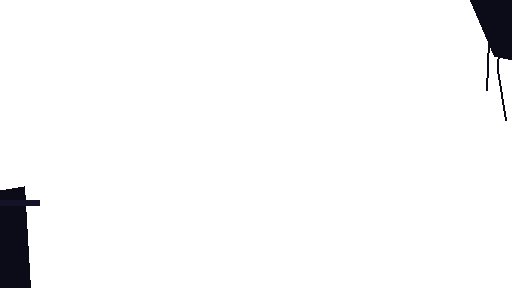 |
| 8 | cena1_laboratorio/08_ilves_susto.pngALTERNATIVA da 05 (mesma posição/ordem): ela tira o olho da ocular e levanta a cabeça assustada; o rabo de cavalo chega depois (6 q., sem loop) | 226, 205 | 44×48 | 6 @ 6 fps · sem loop | 1.0 |
Movimento sugerido: Cena em meia resolução (amplia ×8). Câmera parada ou zoom mínimo. Loop de concentração (respira, pisca). Depois da cena 2, troca a camada 01 pela 04 (reação de medo, sem loop) e segura o último quadro.
| # | arquivo | x, y | tamanho | quadros | parallax | prévia |
|---|---|---|---|---|---|---|
| 0 | cena1b_close_rosto/00_fundo.pnglaboratório fora de foco (meia resolução) | 0, 0 | 256×144 | 1 | 0.4 | 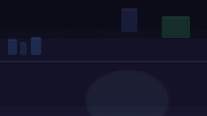 |
| 1 | cena1b_close_rosto/01_ilves_busto.pngretrato 3/4 (64×64, estilo diálogo de RPG), concentrada: respira, a cabeça acompanha, pisca (q. 5-7) | 70, 58 | 64×94 | 8 @ 6 fps | 1.0 | |
| 2 | cena1b_close_rosto/02_poeira_feixe.pngpoeira flutuando na luz fria | 107, 64 | 100×80 | 8 @ 4 fps | 1.1 | |
| 3 | cena1b_close_rosto/03_ocular.pngo microscópio em primeiro plano, à direita (lâmina acesa) | 0, 0 | 256×144 | 1 | 1.3 | 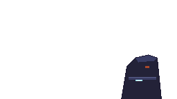 |
| 4 | cena1b_close_rosto/04_ilves_reacao.pngALTERNATIVA da 01 (mesma posição/ordem): pisca de susto, arregala, recua a cabeça, a boca entreabre; para no último quadro | 70, 58 | 64×94 | 6 @ 6 fps · sem loop | 1.0 |
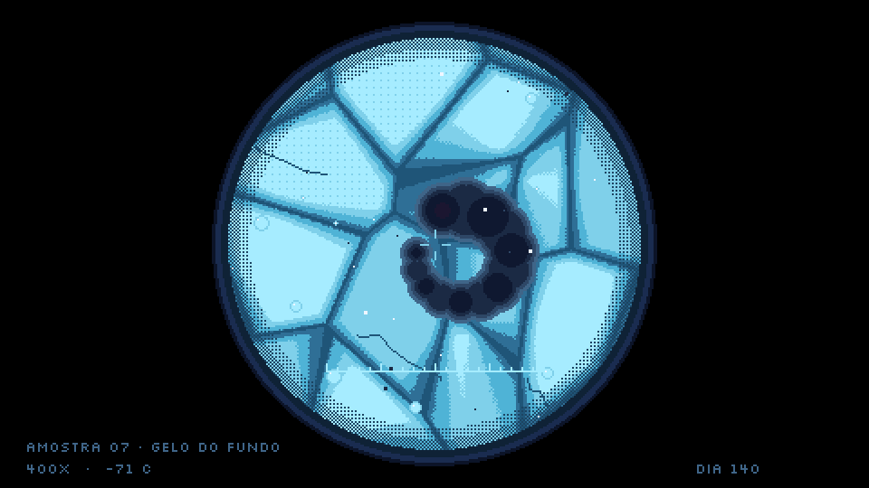
Movimento sugerido: Câmera parada. O campo de cristais deriva bem devagar (pan de ~12 px em 4 s). A forma escura se mexe de um quadro pro outro (8 q.). No fim, ela PARA e a tela corta pro preto, como se tivesse percebido.
| # | arquivo | x, y | tamanho | quadros | parallax | prévia |
|---|---|---|---|---|---|---|
| 0 | cena2_microscopio/00_campo_cristais.pngcélulas de gelo (Voronoi em faixas), bolhas e rachaduras; 40 px de folga pra derivar | 118, 6 | 276×276 | 1 | 0.6 | 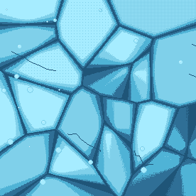 |
| 1 | cena2_microscopio/01_forma_escura.pnga coisa em C: enrola/desenrola e a cauda bate (q. 0..7 em loop); q. 8..9 = parada (usar no fim) | 215, 97 | 110×110 | 10 @ 5 fps | 0.6 | |
| 2 | cena2_microscopio/02_lente.pngmáscara da ocular: preto fora, vinheta em faixas, régua do retículo, legenda | 0, 0 | 512×288 | 1 | 1.0 | 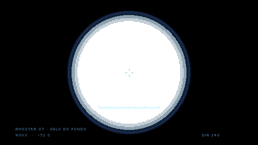 |
| 3 | cena2_microscopio/03_particulas.pngpartículas presas no filme de água derivando devagar | 138, 26 | 236×236 | 8 @ 2 fps | 0.6 |
Movimento sugerido: Plano parado e longo (ou zoom lento até ×2 inteiro na Ilves). A lâmpada do corredor mais perto pisca. Ela gira a chave (o LED do painel vai de verde pra vermelho: usar a tira sem loop). Corte pro insert 3b (a mão e a chave) e volta. Opcional: pan lento pra esquerda revelando o corredor escuro.
| # | arquivo | x, y | tamanho | quadros | parallax | prévia |
|---|---|---|---|---|---|---|
| 0 | cena3_trancando/00_corredor.pngcorredor, porta do LAB 2, placa, painel da fechadura, chão de grade | 0, 0 | 512×288 | 1 | 1.0 | 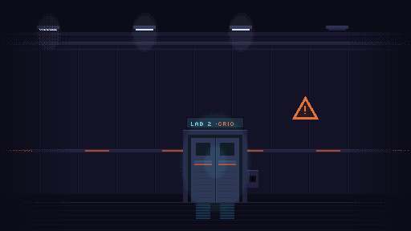 |
| 1 | cena3_trancando/01_janelinha_brilho.pngluz fria lá dentro, tremendo | 238, 178 | 60×16 | 4 @ 3 fps | 1.0 | |
| 2 | cena3_trancando/02_lampada_pisca.pnga lâmpada sobre a porta falha (cone de luz chapado quando acesa) | 380, 32 | 80×230 | 8 @ 6 fps | 1.0 | |
| 3 | cena3_trancando/03_ilves_costas.pngIlves de costas (30×60) com a mão na fechadura; respira (6 q.) | 287, 193 | 30×60 | 6 @ 4 fps | 1.0 | |
| 4 | cena3_trancando/04_led_trava.pngLED do painel: verde, verde, âmbar, vermelho... (não faz loop: para no vermelho) | 311, 214 | 8×4 | 6 @ 2 fps · sem loop | 1.0 | |
| 5 | cena3_trancando/05_primeiro_plano.pngbatente escuro à esquerda (parallax no pan) | 0, 0 | 512×288 | 1 | 1.4 |
Movimento sugerido: Meia resolução (amplia ×8). Ilves de costas, corpo inteiro, gira a chave em 4 quadros (sem loop); o destaque é o painel: o LED vai de ABERTO (verde) pra TRAVADO (vermelho). Zoom lento na fechadura (1.0 → 1.5, ancorado no painel) e segura 1 s no último quadro. Sem música, só o clique.
| # | arquivo | x, y | tamanho | quadros | parallax | prévia |
|---|---|---|---|---|---|---|
| 0 | cena3b_chave/00_painel.pngparede, a porta do LAB 2 e o painel grande da fechadura (meia resolução) | 0, 0 | 256×144 | 1 | 1.0 | 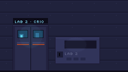 |
| 1 | cena3b_chave/01_led_texto.pngABERTO → ... → TRAVADO, junto com o giro (para no vermelho) | 129, 81 | 64×16 | 4 @ 3 fps · sem loop | 1.0 | |
| 2 | cena3b_chave/02_mao_chave.pngIlves de costas (30×60), o pulso gira a chave 90° em 4 q. (sem loop) | 92, 80 | 30×60 | 4 @ 3 fps · sem loop | 1.0 |
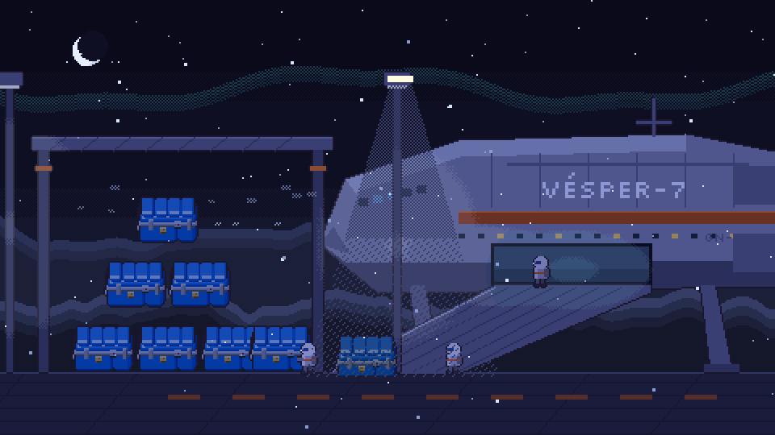
Movimento sugerido: Plano geral parado ou pan bem lento pra direita (parallax: céu 0.1, serra 0.3, nave 1.0, neve na frente 1.5). Contêiner subindo a rampa no trenó, tripulantes andando, holofotes falhando, a luz vermelha da antena piscando. Texto do manifesto pode entrar por cima.
| # | arquivo | x, y | tamanho | quadros | parallax | prévia |
|---|---|---|---|---|---|---|
| 0 | cena4_vesper7/00_ceu.pngcéu noturno, estrelas, lua e uma aurora fria apagada | 0, 0 | 512×288 | 1 | 0.1 | 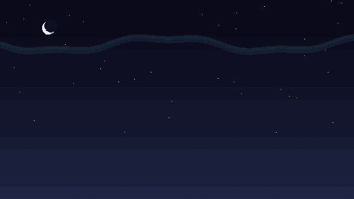 |
| 1 | cena4_vesper7/01_serra_longe.pngserra distante | 0, 0 | 512×288 | 1 | 0.3 | |
| 2 | cena4_vesper7/02_serra_perto.pngserra perto | 0, 0 | 512×288 | 1 | 0.5 | 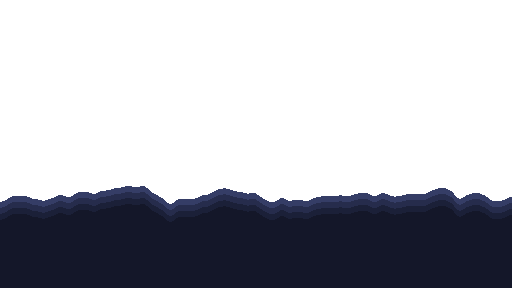 |
| 3 | cena4_vesper7/03_plataforma_nave.pngplataforma, a VÉSPER-7 com a baía aberta, rampa, pilha de contêineres frios, pórtico e holofotes | 0, 0 | 512×288 | 1 | 1.0 | 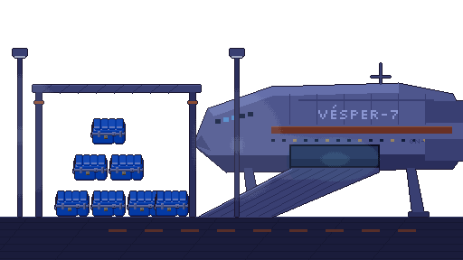 |
| 4 | cena4_vesper7/04_vapor_frio.pngvapor gelado subindo da pilha (pontilhado) | 50, 110 | 180×60 | 8 @ 6 fps | 1.0 | |
| 5 | cena4_vesper7/05_conteiner_rampa.pngum contêiner num trenó flutuante subindo a rampa (loop de 12 q.) | 222, 152 | 140×90 | 12 @ 4 fps | 1.0 | |
| 6 | cena4_vesper7/06_tripulante_a.pngtripulante com lanterna, andando | 290, 222 | 14×20 | 4 @ 6 fps | 1.0 | |
| 7 | cena4_vesper7/07_tripulante_b.pngtripulante carregando um painel | 200, 222 | 14×20 | 4 @ 6 fps | 1.0 | |
| 8 | cena4_vesper7/08_tripulante_c.pngtripulante parado na boca da baía, olhando a carga | 344, 168 | 14×20 | 1 | 1.0 | 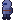 |
| 9 | cena4_vesper7/09_antena_luz.pngluz vermelha no topo da antena | 419, 66 | 4×4 | 4 @ 2 fps | 1.0 | |
| 10 | cena4_vesper7/10_holofote.pngo holofote do meio falha (cone pontilhado) | 194, 56 | 140×190 | 8 @ 8 fps | 1.0 | |
| 11 | cena4_vesper7/11_neve.pngneve/poeira fria caindo na frente de tudo | 0, 0 | 512×288 | 8 @ 8 fps | 1.5 |
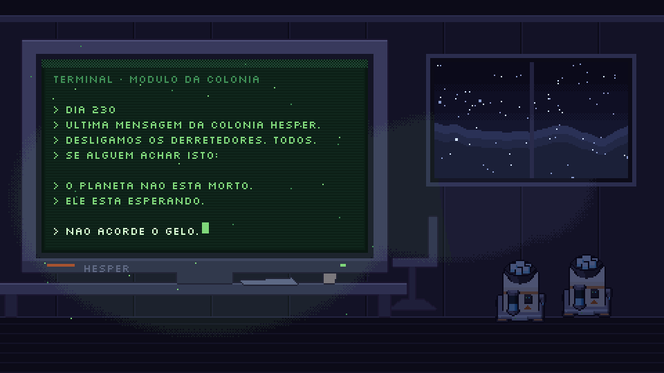
Movimento sugerido: Começa no plano aberto (sala vazia, derretedor apagado ao fundo) e faz zoom lento até a tela (1.0 → 1.35, ancorado no meio da tela). As linhas aparecem letra por letra (cenas.json traz o x de cada letra), o cursor pisca. A última linha entra depois de uma pausa. Sem música.
| # | arquivo | x, y | tamanho | quadros | parallax | prévia |
|---|---|---|---|---|---|---|
| 0 | cena5_terminal/00_fora.pngnoite lá fora (só pela janela) | 0, 0 | 512×288 | 1 | 0.3 | 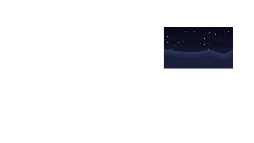 |
| 1 | cena5_terminal/01_neve_janela.pngneve na janela | 330, 54 | 140×84 | 8 @ 8 fps | 0.4 | |
| 2 | cena5_terminal/02_tela_fundo.pngfundo da tela: verde escuro com scanline | 46, 52 | 236×140 | 1 | 1.0 | 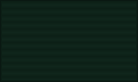 |
| 3 | cena5_terminal/03_sala.pngsala vazia: mesa, monitor (tela vazada), cadeira, janela, 2 derretedores apagados | 0, 0 | 512×288 | 1 | 1.0 | 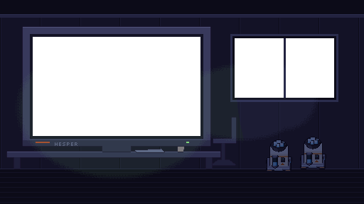 |
| 4 | cena5_terminal/04_linha_00.png"TERMINAL · MODULO DA COLONIA" digitar: char_x no cenas.json | 54, 60 | 224×10 | 1 | 1.0 | |
| 5 | cena5_terminal/05_linha_02.png"> DIA 230" digitar: char_x no cenas.json | 54, 82 | 224×10 | 1 | 1.0 | 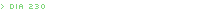 |
| 6 | cena5_terminal/06_linha_03.png"> ULTIMA MENSAGEM DA COLONIA HESPER." digitar: char_x no cenas.json | 54, 93 | 224×10 | 1 | 1.0 | 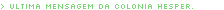 |
| 7 | cena5_terminal/07_linha_04.png"> DESLIGAMOS OS DERRETEDORES. TODOS." digitar: char_x no cenas.json | 54, 104 | 224×10 | 1 | 1.0 | 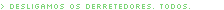 |
| 8 | cena5_terminal/08_linha_05.png"> SE ALGUEM ACHAR ISTO:" digitar: char_x no cenas.json | 54, 115 | 224×10 | 1 | 1.0 | 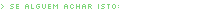 |
| 9 | cena5_terminal/09_linha_07.png"> O PLANETA NAO ESTA MORTO." digitar: char_x no cenas.json | 54, 137 | 224×10 | 1 | 1.0 | 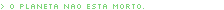 |
| 10 | cena5_terminal/10_linha_08.png"> ELE ESTA ESPERANDO." digitar: char_x no cenas.json | 54, 148 | 224×10 | 1 | 1.0 | 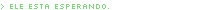 |
| 11 | cena5_terminal/11_linha_10.png"> NAO ACORDE O GELO." digitar: char_x no cenas.json | 54, 170 | 224×10 | 1 | 1.0 |  |
| 12 | cena5_terminal/12_cursor.pngcursor piscando (move pro fim da linha que está sendo digitada; y = linha × 11) | 162, 170 | 5×8 | 2 @ 2 fps | 1.0 | |
| 13 | cena5_terminal/13_tela_varredura.pngfaixa de varredura descendo (pontilhada), por cima do texto | 46, 52 | 236×140 | 6 @ 6 fps | 1.0 | |
| 14 | cena5_terminal/14_poeira.pngpoeira na luz verde | 30, 40 | 260×200 | 8 @ 3 fps | 1.2 |
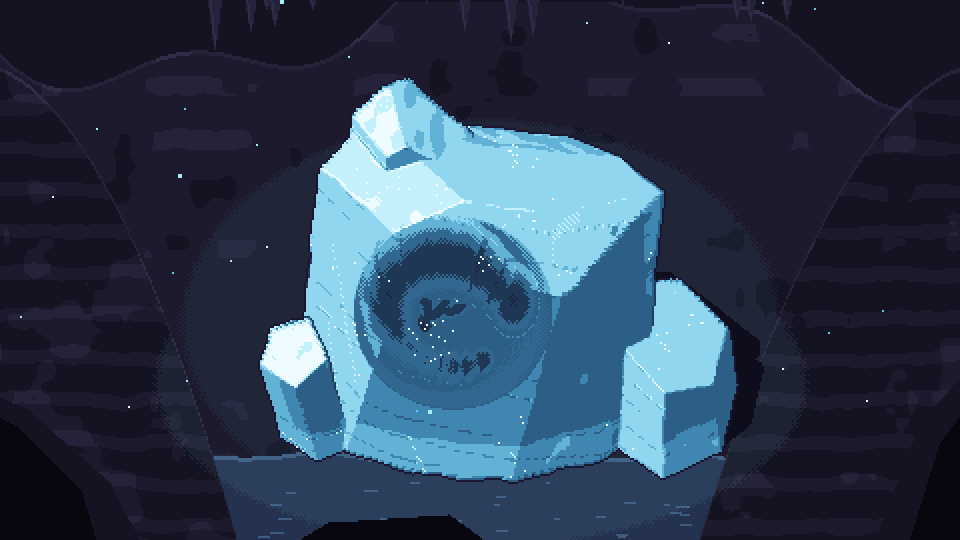
Movimento sugerido: Plano parado, zoom lento pra dentro (1.0 → 1.15) ancorado na criatura. O brilho frio passa pelo gelo (tira do jogo, 8 q.), cristais flutuam. Termina cortando pro close 6b.
| # | arquivo | x, y | tamanho | quadros | parallax | prévia |
|---|---|---|---|---|---|---|
| 0 | cena6_gelo_gigante/00_caverna_fundo.pngparede do fundo: rocha em estratos e estalactites | 0, 0 | 512×288 | 1 | 0.5 | 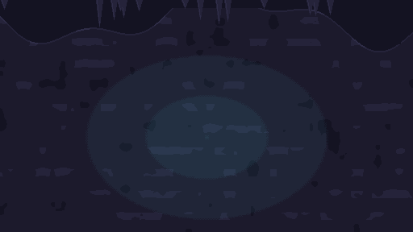 |
| 1 | cena6_gelo_gigante/01_chao_paredes.pngchão de gelo, geada e as paredes de rocha iluminadas pelo gelo | 0, 0 | 512×288 | 1 | 1.0 | 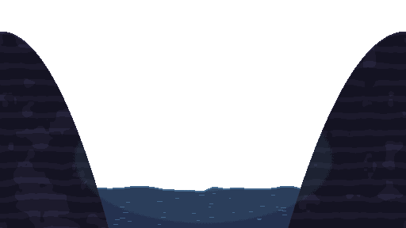 |
| 2 | cena6_gelo_gigante/02_gelo_gigante.pngform_ice_giant_cocoon_anim.png (pendente): respira e o brilho frio passa | 144, 42 | 256×220 | 8 @ 4 fps | 1.0 | |
| 3 | cena6_gelo_gigante/03_cristais_no_ar.pngpoeira de gelo flutuando (loop 16 q.) | 0, 0 | 512×220 | 16 @ 4 fps | 1.2 | |
| 4 | cena6_gelo_gigante/04_rochas_frente.pngsilhuetas de rocha na frente (parallax forte) | 0, 0 | 512×288 | 1 | 1.5 | 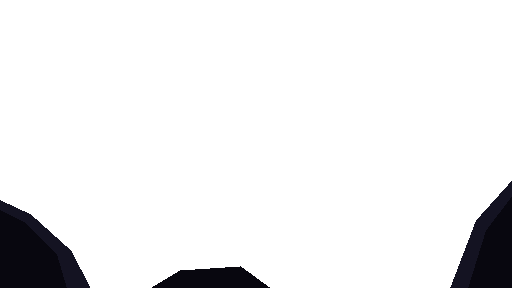 |
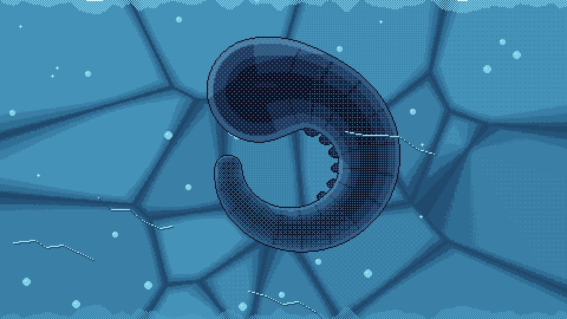
Movimento sugerido: Zoom bem lento pra dentro (1.0 → 1.1). O brilho frio atravessa o gelo em diagonal (tira 12 q.). A criatura quase não mexe: no último quadro ela se contrai uma vez (q. 7 da tira dela). Corte pro preto + "NÃO ACORDE O GELO".
| # | arquivo | x, y | tamanho | quadros | parallax | prévia |
|---|---|---|---|---|---|---|
| 0 | cena6b_close_gelo/00_gelo.pngo interior do gelo: células grandes em faixas, bolhas | 0, 0 | 512×288 | 1 | 0.8 | 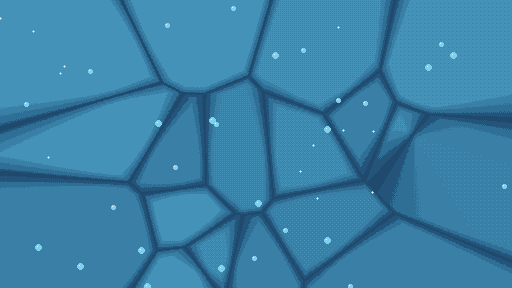 |
| 1 | cena6b_close_gelo/01_criatura.pnga criatura em C, enorme, vista através do gelo (pontilhado = gelo na frente); q. 7 se contrai | 0, 0 | 512×288 | 8 @ 2 fps | 0.8 | |
| 2 | cena6b_close_gelo/02_superficie.pngrachaduras e geada na superfície do gelo | 0, 0 | 512×288 | 1 | 1.0 | 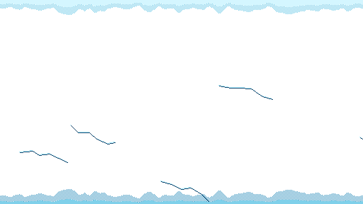 |
| 3 | cena6b_close_gelo/03_brilho_frio.pngo brilho frio passando em diagonal (faixas + pontilhado) | 0, 0 | 512×288 | 12 @ 6 fps | 1.0 |
v1.2: cientista da colônia, alta e esguia, sempre meio curvada e curiosa. Cabelo castanho num rabo de cavalo alto
e bagunçado (elástico laranja) com mechas caindo no rosto, goggles de laboratório empurrados na testa, jaleco branco
aberto por cima do uniforme azul-acinzentado da Colônia Hesper, gola laranja #e2733a, crachá com LED
ciano, botas escuras. Desenhada pixel a pixel em mapas de caracteres (contorno #1b1630 desenhado à mão).
Aqui na luz neutra; em cada cena ela é re-iluminada (tinta da noite + luz de recorte da fonte da cena).
personagem/ilves_sentada_microscopio.png
sentada e curvada na ocular (44×48, chão na linha 47): 8 q., respira, gira o foco, rabo de cavalo atrasa, pisca no q. 6
personagem/ilves_susto.png
susto (6 q., sem loop): tira o olho da ocular e levanta a cabeça; o rabo de cavalo chega depois
personagem/ilves_costas.png
de costas, em pé (30×60, pé na linha 59), mão na fechadura: 6 q. respirando
personagem/ilves_costas_chave.png
de costas girando a chave (4 q., sem loop)
personagem/ilves_retrato.png
retrato 3/4 64×64 (diálogo de RPG), concentrada: 8 q., respira, pisca nos q. 5-7
personagem/ilves_retrato_medo.png
retrato · medo contido (6 q., sem loop): pisca de susto, arregala, recua, boca entreabre
(16, 9, 480, 270). A folga de 16/9 px dá
pan e parallax sem mostrar borda. Amplie ×4 com nearest neighbor (480×270 → 1920×1080).cenas.json.fps sugerido;
loop: false = toca uma vez e para no último quadro (LED e chave).cena1b e cena3b têm canvas 256×144, visível
(8, 4, 240, 135) e scale: 8 no json (240×135 ×8 = 1920×1080). As outras seguem 512×288 ×4.replaces no json): cena1/08_ilves_susto entra no lugar da
05_ilves; cena1b/04_ilves_reacao no lugar da 01_ilves_busto (mesma posição,
desenha na ordem da original). Prévias em preview/*_alt.gif.02_mao_chave agora é ela de
costas girando a chave). Sugestão: zoom inteiro (×2) nos planos gerais 1 e 3 pra ela aparecer.cenas.json). A cena 3 ganhou porta mais alta e a fechadura
subiu pra altura da mão dela; na 3b o buraco da fechadura subiu 26 px.type.char_x traz o x (em px, a partir do começo da
linha) do fim de cada letra pra revelar letra por letra com uma máscara. O cursor anda pro fim da linha atual.tools/sprites/trailer_ilves.py (determinístico).